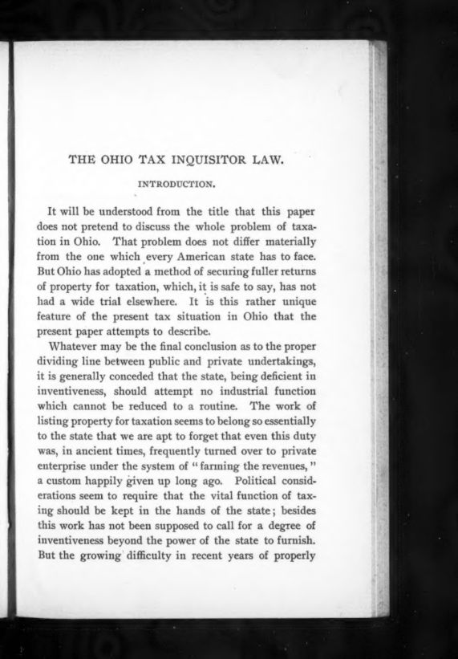

Carver, 1898: Ohio terceiriza a caça aos bens sonegados
Leitura: 12 min
T. N. Carver descreve a lei que permitia aos condados de Ohio contratar caçadores privados de bens omitidos do fisco, pagos por comissão, e pergunta se o sistema salvou o imposto geral sobre a propriedade.


No condado de Allen, em Ohio, um inquisidor fiscal chamado Henry W. Morgenthaler, contratado para receber 20% de todo imposto cobrado a partir das suas informações, concluiu que Calvin S. Brice deixara de declarar, por vários anos, bens de cerca de US$ 2 milhões no condado. O auditor intimou Brice a explicar por que aqueles bens não deviam entrar no rol de lançamento. A notificação foi entregue em Nova York. Segundo a petição citada por T. N. Carver, Brice não lhe deu atenção, a não ser para anunciar que faria revogar a lei.
O caso está em The Ohio Tax Inquisitor Law, nº 3 do terceiro volume dos Economic Studies, de junho de 1898. Carver avisa que não pretende discutir todo o problema tributário de Ohio, que não difere muito do de qualquer outro estado americano. Seu tema é um método que, diz ele, não teve ampla aplicação em outros lugares: diante do fracasso dos agentes públicos em obter declarações completas de bens móveis, o estado chamou a iniciativa privada em seu socorro. O estudo tem cinco partes: a legislação de cadastro dos bens móveis, o sistema atual, seus resultados, o modo como é visto e uma conclusão.
“Em alguns aspectos, é um retorno aos métodos primitivos de arrendamento de impostos.” (In some respects it is a reversion to the primitive methods of tax farming.)
Por que Ohio chegou a esse ponto?
A origem, para Carver, está na constituição estadual de 1851, que manda tributar por regra uniforme todo dinheiro, crédito, investimento, título e ação, além de todos os bens imóveis e móveis, pelo seu valor real em dinheiro. Lendo os debates da convenção, ele tem a impressão de que a principal preocupação dos constituintes era impedir que qualquer legislatura futura distinguisse entre tipos de propriedade. O resultado é que o imposto geral sobre a propriedade ficou fixado no estado até que uma emenda constitucional o mude, e a experiência de Ohio com emendas, observa, não anima ninguém.
Uma lei de 2 de março de 1846 já exigia de cada contribuinte uma lista jurada de todos os seus bens móveis, autorizava o avaliador a interrogar sob juramento quem soubesse desses bens e mandava o auditor do condado acrescentar 50% ao valor apurado de quem se recusasse a jurar. A lei de 25 de março de 1851, quinze dias depois da nova constituição, manteve o essencial. A de 29 de março de 1861 deu ao auditor o recurso ao juiz de sucessões, que podia punir por desacato a testemunha que se negasse a depor. Em 1867, os presidentes e caixas de bancos passaram a ser obrigados a informar, sob juramento, nomes e ações de cada acionista.
Como funcionava o inquisidor?
Antes de 1880, os comissários do condado de Hamilton, o de Cincinnati, já contratavam particulares para descobrir bens omitidos, pagando-lhes comissão sobre o imposto recuperado. Como não havia lei estadual, o condado arcava sozinho com a despesa, embora o estado ficasse com parte da receita. Uma lei de 14 de abril de 1880 resolveu isso: o pagamento sairia só do dinheiro efetivamente recolhido e seria rateado entre todos os fundos beneficiados, inclusive o do estado. Em 1885, a autorização chegou aos condados de Hamilton, Cuyahoga, Lucas e Franklin, que abrigam Cincinnati, Cleveland, Toledo e Columbus. Em 1888, valeu para todos os condados, com comissão limitada a 20%; Carver lê na lei a intenção de deixar as quatro maiores cidades pagarem 25%.
Na prática, os comissários, o auditor e o tesoureiro do condado firmavam contrato de alguns anos com um particular ou uma firma, em geral de fora do condado, longe das influências políticas locais. O contratado montava um pequeno escritório de detetives, vasculhava os registros de hipotecas dos condados de Ohio e dos estados vizinhos e buscava depósitos bancários e ações de empresas de fora do estado em nome de cidadãos de Ohio. Com a prova em mãos, levava o caso ao auditor, que intimava o dono. Na audiência, o inquisidor fazia papel de promotor e sugeria perguntas; o contribuinte respondia sob juramento. Mas quem decidia era sempre o auditor.
Aí está, para Carver, a fraqueza do sistema. O auditor recebia 5% dos impostos assim cobrados, mas ocupava cargo político e às vezes não queria a inimizade de cidadãos influentes. O autor diz ter sido informado, de boa fonte, de que em alguns condados o sistema desabou porque os auditores se recusaram a usar seus poderes. Segundo artigo de E. A. Angel na Yale Review, citado no estudo, as leis de 1880, 1885 e 1888 foram aprovadas pelo empenho dos irmãos Henry W. e C. E. Morgenthaler, que seriam os principais beneficiários; o sistema às vezes é chamado de lei Morgenthaler, mas Carver nega que os irmãos tenham os contratos da maioria dos condados, embora trabalhem nos principais condados urbanos.
O que o caso Brice ensinou?
Quando o auditor de Allen se recusou a agir, Morgenthaler pediu um mandado ao tribunal de circuito, que o negou; a Suprema Corte estadual reformou a decisão e ordenou ao auditor examinar as provas e lançar os bens omitidos. O auditor cumpriu a ordem a seu modo e lançou valor muito menor do que o pedido. Morgenthaler pediu que ele fosse punido por desacato. O tribunal registrou que Brice fora autorizado a falar do seu jeito, sem nenhum interrogatório cruzado, método que julgou mais apto a esconder do que a revelar os fatos, mas concluiu que não havia prova bastante de desacato. A conclusão de Carver é que a lei teve a constitucionalidade confirmada e, com um auditor contrário, virou letra morta.
O autor insiste que os traços realmente drásticos do sistema são mais antigos que os inquisidores. Pela lei de 1861, o auditor podia obrigar qualquer pessoa a revelar o que sabia dos bens de um suspeito; num caso do First National Bank of Youngstown, a Suprema Corte dos Estados Unidos decidiu que até o caixa de um banco podia ser obrigado a depor e a levar os livros de depósitos. Por isso, diz Carver, o argumento de que o imposto sobre heranças serve para cobrar impostos sonegados em vida não se aplica a Ohio: desde uma lei de 20 de abril de 1893, o juiz de sucessões envia ao auditor os inventários, e o espólio paga os cinco anos atrasados com a multa, sem comissão para o inquisidor.
O sistema aumentou a base tributável?
A pergunta decisiva, escreve Carver, é se o método obtém declarações razoavelmente completas. A tabela do auditor estadual mostra o valor lançado dos bens móveis de Ohio, em milhões de dólares, passando de 456,2 em 1880 para 568,6 em 1893 e caindo a 511,1 em 1897, alta que não acompanha o crescimento da população nem o suposto aumento da riqueza. Nos cinco tipos de bens mais sujeitos à sonegação, o único efeito atribuível aos inquisidores é a leve alta dos créditos depois de 1888, de 111,9 milhões naquele ano para 113,8 milhões em 1892, seguida de queda até 102,8 milhões em 1896.
Carver admite que os números não são conclusivos. A tendência geral do país é de queda rápida do valor lançado dos bens móveis, sobretudo nas grandes cidades, e o sistema pode ter evitado uma queda maior. Cincinnati, berço do sistema, seguiu o exemplo das outras grandes cidades: o condado de Hamilton passou de 56,3 milhões em 1883 para 44,9 milhões em 1897. Em Cleveland houve alta constante, até 41,5 milhões em 1897, que o autor atribui sobretudo ao crescimento da cidade e talvez à maior eficiência dos inquisidores. Na comparação com os censos de 1870, 1880 e 1890, os dois condados de Ohio mostram queda da relação entre bens móveis e imóveis até 1880 e estabilidade depois, o que, para ele, sugere que a lei freou a queda.
Quem defendia e quem atacava a lei?
O nome Tax Inquisitor Law nasceu como apelido pejorativo, mas as tentativas de revogação fracassaram. Das respostas de 70 dos 88 auditores de condado, a maioria foi favorável; um deles calculou que, sem a lei, as declarações de bens móveis cairiam um quarto no seu condado, e vários disseram que ela nunca prejudicou um homem honesto. Um auditor de condado pequeno contou ter lançado e cobrado cerca de US$ 75 mil, com o dinheiro e os créditos declarados subindo de US$ 1.447.328 em 1892, quando o trabalho começou, para US$ 1.789.498 em 1897, e com cada contribuinte assinando o reconhecimento da omissão. Dos 70 condados, 56 haviam empregado inquisidores, 41 deles de fora.
As objeções, resume Carver, são quatro. A primeira é que o sistema é inquisitorial, o que ele concede, lembrando que toda lei que tente seriamente tributar bens móveis o é; um opositor admitiu querer a revogação para que Ohio adotasse aos poucos a prática de Nova York de lançar os bens intangíveis por valor simbólico. A segunda é a fuga de capitais, que se ouve em todos os estados; Carver pergunta onde se reúnem os capitalistas fugidos e lembra que, se uns escapam, outros pagam mais. A desvalorização dos imóveis de Cleveland, apontada como prova, ele a explica pelo efeito de alíquotas mais altas sobre o preço da terra.
“muito parecido com dar a um cão uma má fama e depois enforcá-lo por isso” (very much like giving a dog a bad name and then hanging him for it)
A terceira objeção é que o auditor julga sozinho e ganha 5% do que lança; Carver a acha procedente, mas nota que o problema existe com ou sem inquisidor e que, na experiência, os auditores pecam por excesso de leniência. A quarta, que considera válida, é que os resultados são pequenos demais. Em muitos condados com inquisidor em 1895, o valor acrescentado não chegou a 1% dos bens móveis; só em treze casos atingiu 5%, e em sete, 10%. Resta aos defensores a esperança dos efeitos invisíveis, as declarações mais completas de quem teme o inquisidor.
Qual é o balanço de Carver?
Depois de dez anos em vigor em todo o estado, a lei não lhe parece nem sucesso pronunciado nem fracasso evidente. Ela mostrou não ser capaz de reformar o imposto geral sobre a propriedade, e a sonegação continua, como prova a queda em Cincinnati. Ainda assim, comparado ao de outros estados, o imposto funciona notavelmente bem em Ohio, sem os fracassos humilhantes dos estados mais antigos. Se o imposto for mantido, conclui, todo esforço razoável deve ser feito para aplicá-lo, e a lei garante o cadastro de uma soma considerável de bens intangíveis.
“uma última tentativa de escorar o decadente imposto geral sobre a propriedade” (a last attempt to buttress up the decaying general property tax)
Na minha leitura
Na minha leitura, o estudo de Carver é uma pequena aula sobre o problema de agência na arrecadação. O inquisidor tem o incentivo certo, porque só recebe se o imposto entrar no caixa; o auditor, que decide, tem incentivo misto, porque ganha comissão mas depende de votos. O caso Brice mostra que um sistema de fiscalização é tão forte quanto o seu elo político mais fraco, e que pagar por resultado não resolve nada quando quem homologa o resultado não quer homologá-lo.
Também me parece honesto o modo como ele trata os números. Carver procura o efeito da lei nas séries do auditor e nos censos, admite que não encontra prova conclusiva e separa o efeito visível, o valor acrescentado ao rol, do efeito dissuasório, que não aparece em tabela nenhuma. É a mesma dificuldade que enfrenta qualquer avaliação de fiscalização tributária: o que se mede é a sonegação descoberta, não a evitada.
Glossário
- Imposto geral sobre a propriedade (general property tax)
- imposto estadual e local que incidia, à mesma alíquota, sobre imóveis e sobre todos os bens móveis, inclusive dinheiro, créditos e ações.
- Inquisidor fiscal (tax inquisitor)
- particular contratado pelo condado para descobrir bens omitidos do fisco, pago por comissão sobre o imposto recuperado.
- Rol de lançamento (tax duplicate)
- lista oficial dos contribuintes e dos valores tributáveis de cada um no condado.
- Auditor do condado
- autoridade eleita que lançava os impostos e decidia sobre acréscimos ao rol.
- Arrendamento de impostos (tax farming)
- prática antiga de entregar a particulares a cobrança de tributos em troca de parte da receita.
- Bens intangíveis
- créditos, depósitos, títulos e ações, fáceis de esconder do avaliador.
- Mandado (mandamus)
- ordem judicial que obriga uma autoridade a praticar um ato do seu dever.
Fontes
- Introduction (pp. 167–168). Internet Archive (número completo, PDF)
- I. The Listing of Personal Property in Ohio (pp. 169–177). Internet Archive (número completo, PDF)
- II. The Present Tax Inquisitor System (pp. 178–189). Internet Archive (número completo, PDF)
- III. The Results of the System (pp. 190–197). Internet Archive (número completo, PDF)
- IV. How the System is Regarded (pp. 198–210). Internet Archive (número completo, PDF)
- V. Conclusion (pp. 211 ss.). Internet Archive (número completo, PDF)
- Número completo digitalizado (domínio público): Internet Archive.
Documento em domínio público (EUA, publicado antes de 1931), via JSTOR Early Journal Content e Internet Archive. Resumo e comentário do autor deste site, sem afiliação com a American Economic Association. Encontrou um erro? Escreva: a correção é publicada no próprio texto, com data.
← ES 15 · Swain, 1898: as ferrovias americanas nas mãos dos tribunais ES 17 · Aldrich, 1898: como a American Federation of Labor se organizou →